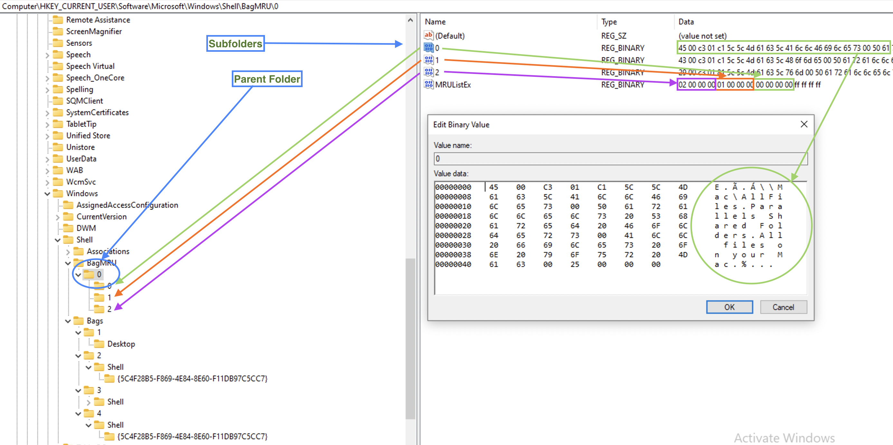
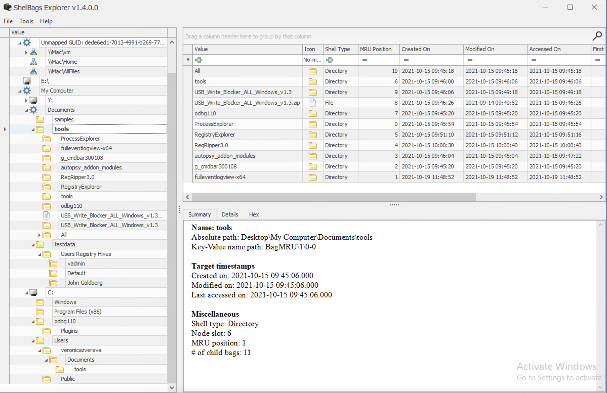

To open a file, one needs to perform a delightful jaunt to a directory where those files reside. Now picture this: imagine if we could keep a journal of all the full paths of the folders visited; wouldn’t that be splendid? It so happens that this nice functionality does exist on Windows machines and ShellBags they are called. Since these folders can be located on a remote machine, a USB drive or any other external media, this artefact can be used to make assumptions about remote connections and devices attached.
📑 USRCLASS.DAT, 🔑 \Local Settings\Software\Microsoft\Windows\Shell\BagMRU, subkeys: MRUListEx, NodeSlot, Subkeys and 🔑 Local Settings\Software\Microsoft\Windows\Shell\Bags, subkeys: Shell, will have folder’s GUID.
volatility.exe -f memory.dmp --profile=Win7SP1x64 shellbags
Created On: when the folder was created/moved/renamed. The last accessed and created timestamps are sometimes the same. The last modified timestamp is when the preferences were last changed (window resized, view options changed). Mind if it’s UTC or GMT. Also, this data might be updated with a little lag. Last key write time is the ShellBag’s timestamp.
⛔️ Shortcuts MAC times are not updated!
⛔️ Fat16 only records date. No time. So the
Last accessedtime for a fat16 formatted folder will be00:00:00.000. It’s more usual for a USB removable media.
Created On, Modified On, and Last accessed on are all FS timestamps ❗️❗️❗️ However, Registry last write time is its own timestamp, and it seems to be updated even when no preferences were changed.
Track Windows folder settings (how the view is set), track zip files, and folder access, even if the information was deleted. It can also show folders on removable media. This data is initially slightly confusing but can be digested in a few minutes. One important thing to note is that both keys are interconnected. I’ve used arrows, squares and circles to mark data corresponding to each for better visualisation below. Sometimes, additional info for the NTFS filesystem will be available (MFT record number) and file system type as well, not always, however.
⚠️ Proves that the user interacted with these folders if found in ShellBags but not on the system.
❓ How about when being hacked? A hacker might delete the folder.
Right under BagMRU subkey, there is only one subkey (in this case, in the case of shell bags, a folder): 0. MRUListEx contains a list of folders inside this one identified by sequence numbers. In our example, there are only three subfolders (and, hence, values in the list) in this folder: 00 00 00 00, just 0 in little-endian (green), 01 00 00 00, just 1 in little-endian (orange) and 02 00 00 00, just 2 in little-endian (purple). Above the MRUListEx are three values in our case, each corresponding to the subfolder and containing a folder path and name. In the example below, the 0 subfolder’s value is expanded and marked with a green circle.
Each of these folders in the list will have a corresponding subkey inside our 0 subkey/folder (marked with arrows on the left).

So, we have a parent folder info, what folders it contains, and the paths to them. Now, since ShellBags store folder settings, where are they? Under the second subkey, Bags. But since sequence numbers are also used here, how do we find the folder we need? Are these sequence numbers the same as in the picture above? The answer is no. In the picture above, they were numbering restarts from 0 for each folder’s subfolders so that each folder with at least one subfolder will have at least 0 value and a 0 subkey. However, the Bags subkeys number folders sequentially. Each subkey representing a folder in a BagMRU subkey we’ve seen above will have a value NodeSlot. This is a number it’s identified within Bags subkey. See the below example for folder 0.

🛠 ShellBagsExplorer (E. Zimmerman) is a tools that helps automating this process which is useful for larger amount of data.

The above is an example of the ShellBagsExplorer for my Windows 10 Parallels VM. Pretty user-friendly representation and lot’s of valuable information. Note the folders on the very top: \\Mac\vm, \\Mac\Home and \\Mac\AllFiles. Someone who is using Paralells Windows 10 on Mac might note this at once, that this is a VM running on a Mac. Also, both \\Mac\Home and \\Mac\AllFiles are no longer available for Windows 10, but they were not deleted from the registry as you may see. That’s because when folders are deleted, they are not deleted from here, at least not soon.
Key 🔑 : Local Settings\Software\Microsoft\Windows\Shell\BagMRU . Values: MRUListEx, NodeSlot, Subkeys.
Key 🔑 : Local Settings\Software\Microsoft\Windows\Shell\Bags. Values: Shell, will have folder’s GUID.
Created On: when the folder was created/moved/renamed. Last accessed and created are sometimes the same. Last modified is when the preferences were last changed (window resized, view options changed). Mind if it’s utc or gmt. Also, this data might be updated with a little lag. Last key write time is the ShellBag’s timestamp.
⚠️ Shortcuts MAC times are not updated!
⚠️ Fat16 only records date. No time. So the
Last accessedtime for a fat16 formatted folder will be00:00:00.000. It’s more usual for a USB removable media.
Created On, Modified On and Last accessed on are all FS timestamps ❗️❗️❗️ However, Registry last write time is its own timestamp and it seems to be updated even when no preferences were changed.
Track Windows folder settings (how the view is set), track zip files, folder access, even if information was deleted. Can also show folders on removable media. This data is a little bit confusing at first, but can be digested in a couple of minutes. One important thing to note is that both keys are interconnected. I’ve used arrows, squares and circles to mark data corresponding to each for better visualization on the picture below. Sometimes, additional info for NTFS filesystem will be available (MFT record number) and file system type as well, not always however.
⚠️ Proves that the user interacted with these folders if they are found in ShellBags but not on the system.
❓ How about when being hacked? A hacker might delete the folder.
Right under BagMRU subkey, there is only one subkey (in this case, in case of shell bags, a folder): 0. MRUListEx contains a list of folders inside this one identified by sequence numbers. In our example there are only three subfolders (and, hence, values in the list) in this folder: 00 00 00 00, just 0 in little-endian (green), 01 00 00 00, just 1 in little-endian (orange) and 02 00 00 00, just 2 in little-endian (purple). Above the MRUListEx there are three values in our case, each corresponding to the subfolder and containing a folder path and name. In the example below the 0 subfolder’s value is expanded and marked with a green circle.
Each of these folders in the list will have a corresponding subkey inside our 0 subkey/folder (marked with arrows on the left).
So, we have a parent folder info, what folders it contains and the paths to them. Now, since ShellBags store folder settings, where are they? Under the second subkey, Bags. But since sequence numbers are used here as well, how do we find the folder we need? Are these sequence number the same as on the picture above? The answer is no. On the picture above numbering restarts from 0 for each folder’s subfolders, so that each folder that has at least one subfolder, will have at least 0 value and a 0 subkey. However, the Bags subkeys numbers folders sequencially. Each subkey representing a folder in a BagMRU subkey we’ve seen above, will have a value NodeSlot. This is a number it’s identified by withing Bags subkey. See the below example for the folder 0.
🛠 ShellBagsExplorer (E. Zimmerman) is a tools that helps automating this process which is useful for larger amount of data.
The above is an example of the ShellBagsExplorer for my Windows 10 Parallels VM. Pretty user-friendly representation and lot’s of valuable information. Note the folders on the very top: \\Mac\vm, \\Mac\Home and \\Mac\AllFiles. Someone who is using Paralells Windows 10 on Mac might note this at once, that this is a VM running on a Mac. Also, both \\Mac\Home and \\Mac\AllFiles are no longer available for Windows 10, but they were not deleted from the registry as you may see. Because when folders are deleted, they are kept from here, at least not soon.